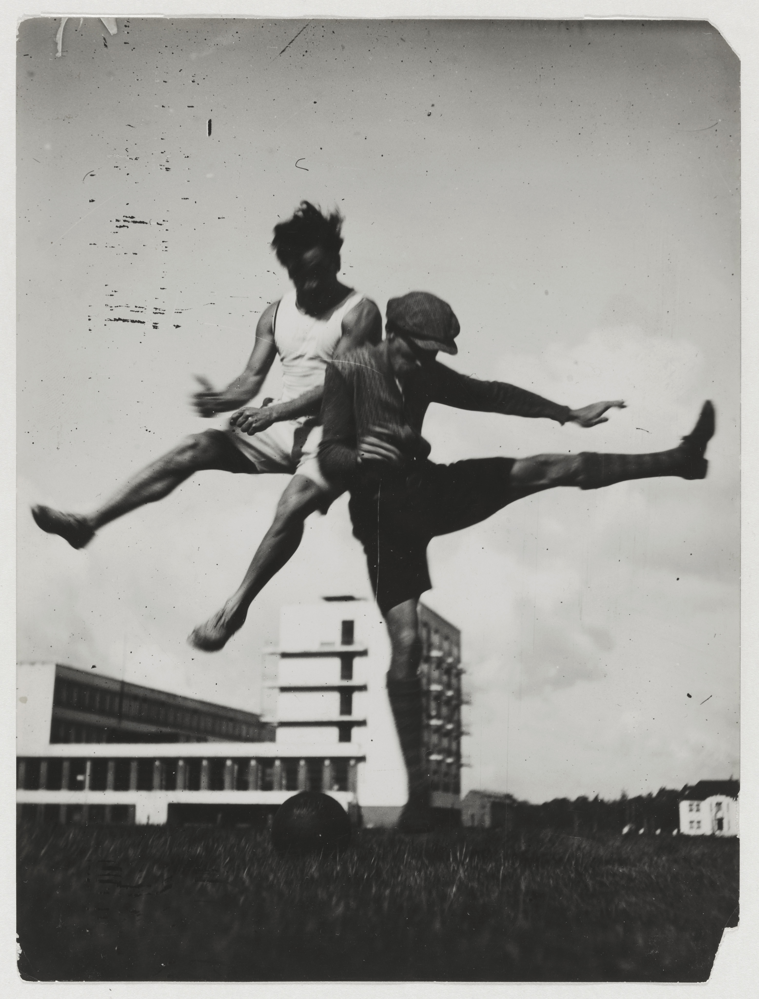
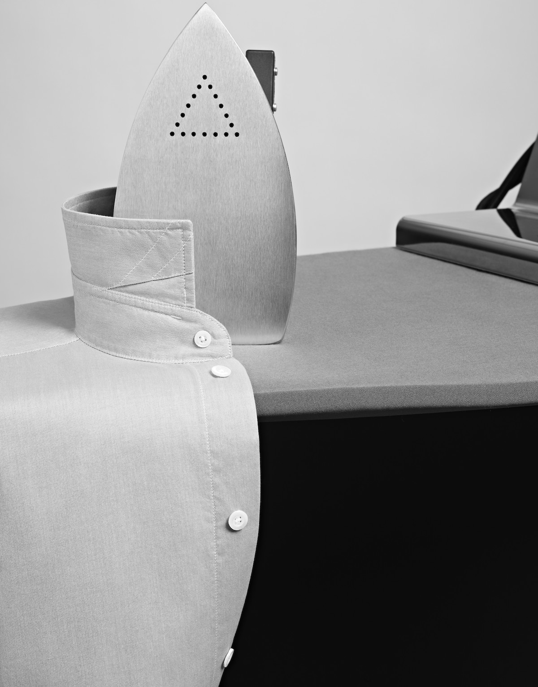
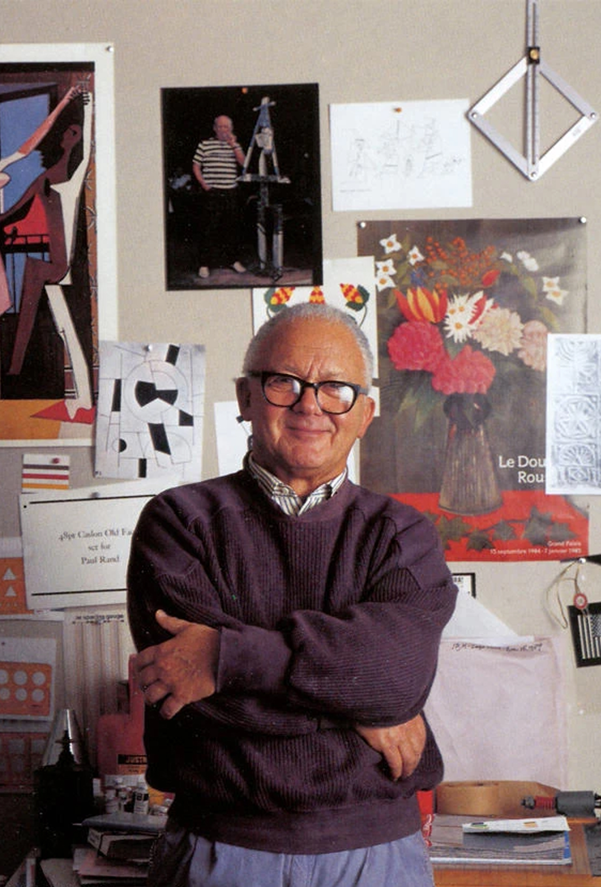

01 • 1919
09 • 2026
Эволюция дизайн-культуры.
Становление дизайна как профессии – через обретение собственной инфраструктуры, языка и культуры. От первых школ и мастерских – к корпоративным идентичностям, дизайн-системам и работе рядом с машинами.

Школа в Веймаре (1919–1933), которая впервые сформулировала дизайн как культурную практику, а не как ремесло или искусство.
1919–1933 • Веймар • Школа

Hochschule für Gestaltung Ulm (1953–1968), переопределившая дизайн как системную методологическую деятельность.
1953–1968 • Ульм • Школа

Пол Рэнд и IBM Identity System (1956). Первая программа корпоративного дизайна, переопределившая роль визуального языка как кодификатора ценностей компании.
1956–1980 • Нью-Йорк • Корпорация